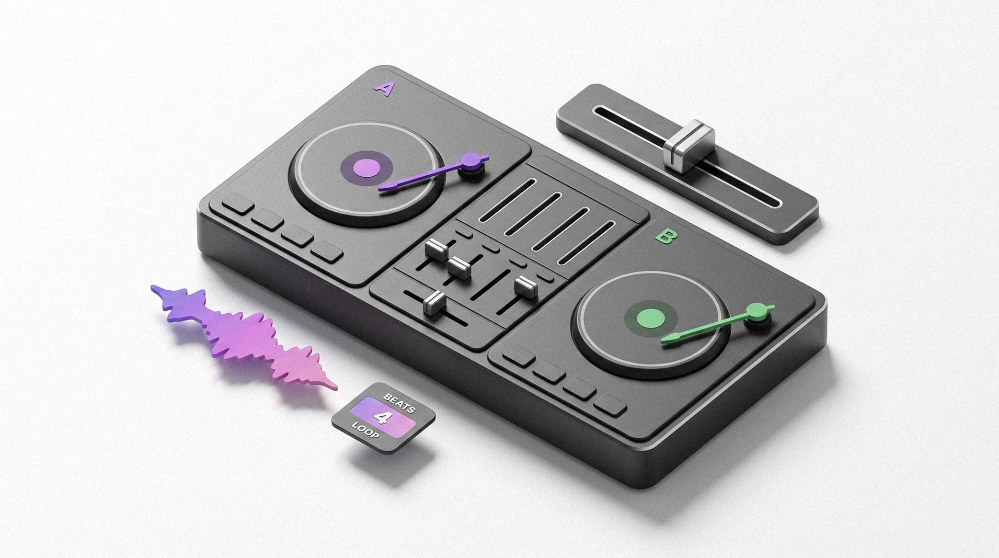

APEX: DJ Console
A professional, browser-native DJ system powered by live procedural audio synthesis. Featuring zero-install hardware integration via Web MIDI (Ableton-style mapping) and a faithful emulation of the legendary Red Sound Soundbite loop sampler.

Stylo.You
A personalized AI-based style ecosystem: from image generation to a social network of professional stylists.

Luma One / Halo
Smart home environment concept. Designing adaptive spaces and cinematic visual experiences driven by AI prompts.

Sber User Soft
Designing an omnichannel AI ecosystem. Features an AI Agent, seamless workspace migration, and request flow redesign for 250k+ employees.

Ingosstrakh
Redesign of key user flows and insurance products. Conversion optimization and visual language update.